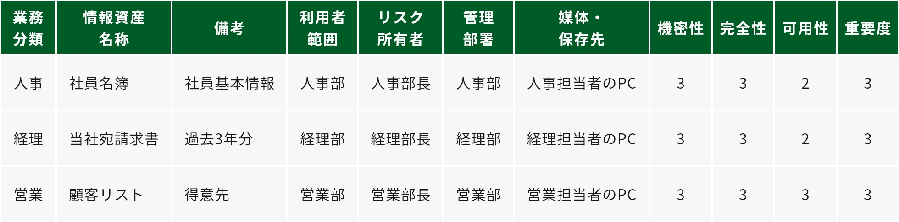
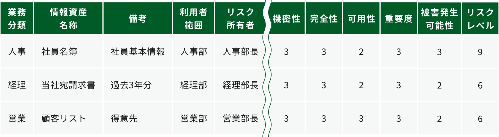

9-2. 【Lv.1 クイックアプローチ】セキュリティインシデント事例を参考とした実施手順
Lv.1 クイックアプローチ
クイックアプローチでは、自社で発生する可能性が高い、または実際に発生したときの被害が大きいと考えられるセキュリティインシデント事例を参考に、対策基準を策定します。決定した対策基準をもとに、具体的に実施する内容（実施手順）を作成します。
対策基準・実施手順作成の手順
セキュリティインシデント事例をもとにリスクアセスメントを実施します。以下は、情報セキュリティ10大脅威2024にランクインしている「内部不正による情報漏えい」に関するセキュリティインシデント事例です。
事例：内部不正による情報漏えいの疑い（卸売業・小売業、従業員数6~20名以下）
被害内容
元従業員が退職前に大量にファイルをダウンロードしました。また、同従業員が使用していたPCの履歴が消去され、専門家でも復旧できない状態になっていました。
機密情報の持ち出しをした確定的な証拠が得られなかったため、結果的には被害届を提出しませんでした。しかし、この判断をするまでに2年かかりました。その間、弁護士に情報提供するために、多くの作業が必要になりました。例えば、経営者と総務担当は、情報漏えいしたと疑われる膨大なログを確認し、どれが機密情報に該当するかチェックする作業を強いられました。トラブル発生時は、人件費に加えて、心的負担も大きくかかりました。
機密情報の持ち出しをした確定的な証拠が得られなかったため、結果的には被害届を提出しませんでした。しかし、この判断をするまでに2年かかりました。その間、弁護士に情報提供するために、多くの作業が必要になりました。例えば、経営者と総務担当は、情報漏えいしたと疑われる膨大なログを確認し、どれが機密情報に該当するかチェックする作業を強いられました。トラブル発生時は、人件費に加えて、心的負担も大きくかかりました。
被害発生の原因社外からの脅威のセキュリティ対策としてウイルス対策ソフトウェアや電子メールへの対応、アクセス制限などは進めていたが、社内から発生する脅威のセキュリティ対策は不十分であったこと。
セキュリティインシデント事例：内部不正による情報漏えい
(出典) IPA「2021年度 中小企業における情報セキュリティ対策に関する実態調査 -事例集- 」をもとに作成

資産目録の例
（出典）IPA 「リスク分析シート」をもとに作成
リスク分析（例）
リスク特定で算出した重要度と、被害発生可能性からリスクレベルを算出します。被害発生可能性は、セキュリティインシデント事例と同様の被害がどの程度起きやすいかを考慮して算出します。
リスクレベルの算出方法「リスクレベル」＝「重要度」×「被害発生可能性」

リスク評価（例）
リスクレベルをもとに、必要なリスク対応を検討します。今回は、例としてリスク低減や回避を選択します。
リスク低減
セキュリティ対策（管理策）を採用することによって、リスクの発生確率を低くしたり、リスクが顕在化したときの影響の大きさを小さくしたりすること
リスク移転
リスクを他者に移して、自分たちの責任範囲外にしたり、リスクが顕在化したときの損失を他者に引き受けさせたりすること
リスク回避
リスクが発生する可能性のある環境を排除するなど、リスクそのものをなくそうとすること
リスク受容（保有）
セキュリティ対策を行わずにリスクを受け入れるということ
対策基準の策定（例）
リスク評価の結果を参考に対策基準を策定します。今回の例では、リスク低減や回避に関する対策基準を決定しています。対策基準の例は以下の通りです。
対策基準（例）
・社内の機密情報に関する社内規程の策定
・重要情報の管理、保護
・物理的管理の実施
・従業員向け研修の実施
・重要情報の管理、保護
・物理的管理の実施
・従業員向け研修の実施
実施手順の作成（例）
情報セキュリティ関連規程を参考に、実施手順を作成します。情報セキュリティ関連規程とは、情報セキュリティに関する社内規則の見本です。情報セキュリティ関連規程から、対策基準に合った規則を選択し、赤字の箇所を自社の状況に合わせて編集することにより、実施手順を作成します。
実施手順の作成（例）
機密情報に関する社内規程の策定（例）従業員の責務
従業員は以下を遵守する
・
・
・
・
従業員は以下を遵守する
・
従業員
は、当社が営業秘密として管理する情報およびその複製物の一切を許可されていない組織、人に提供してはならない。・
従業員
は、当社の情報セキュリティ方針および関連規程を遵守する。違反時の懲戒
については、就業規則に準じる。・
従業員
は、在職中に交付された業務に関連する資料、個人情報、顧客・取引先から当社が交付を受けた資料またはそれらの複製物の一切を退職時に返還する。・
従業員
は、在職中に知り得た当社の営業秘密または業務遂行上知り得た技術的機密
を利用して、競合的あるいは競業的行為を行ってはならない。
重要情報の管理、保護
（例）利用者アカウントの管理
利用者の認証に用いるアカウントが不要になる場合、
利用者の認証に用いるアカウントが不要になる場合、
システム管理者
は、当該アカウントの削除または無効化を、当該アカウントが不要になった日の翌日までに
実施する。
物理的管理の実施
（例）情報資産の社外持ち出し管理
情報資産を社外に持ち出す場合には、以下を実施する。
・社外秘の場合は所属部門長の許可を得る。
・極秘の場合は代表取締役の許可を得る。
・ノートパソコンのハードディスクに保存して持ち出す場合は、ハードディスク/フォルダー/データを暗号化する。
・スマホ、タブレットに保存して持ち出す場合は、セキュリティロックを設定する。
・USBメモリなどの小型電子媒体は、大きなタグをつける/ストラップで体やカバンに固定する/落としてもすぐにわかるように鈴をつける。
・屋外でネットワークへ接続して極秘または社外秘の情報資産を送受信する場合は、暗号化する。
・携行中は常に監視可能な距離を保つ。
情報資産を社外に持ち出す場合には、以下を実施する。
・社外秘の場合は所属部門長の許可を得る。
・極秘の場合は代表取締役の許可を得る。
・ノートパソコンのハードディスクに保存して持ち出す場合は、ハードディスク/フォルダー/データを暗号化する。
・スマホ、タブレットに保存して持ち出す場合は、セキュリティロックを設定する。
・USBメモリなどの小型電子媒体は、大きなタグをつける/ストラップで体やカバンに固定する/落としてもすぐにわかるように鈴をつける。
・屋外でネットワークへ接続して極秘または社外秘の情報資産を送受信する場合は、暗号化する。
・携行中は常に監視可能な距離を保つ。
従業員向けの研修
（例）情報セキュリティ教育
対象者：
テーマ：以下は必須とする。
・情報セキュリティ関連規程の説明（入社時、就業時）
・最新の脅威に対する注意喚起（随時）
・関連法令の理解（関連法令の公布・施行時）
・個人情報の取扱いに関する留意事項
・コンプライアンス教育
教育責任者
は、以下の点を考慮し、情報セキュリティに関する教育計画を年度単位で立案する。対象者：
全従業員
テーマ：以下は必須とする。
・情報セキュリティ関連規程の説明（入社時、就業時）
・最新の脅威に対する注意喚起（随時）
・関連法令の理解（関連法令の公布・施行時）
・個人情報の取扱いに関する留意事項
・コンプライアンス教育
詳細理解のため参考となる文献（参考文献）